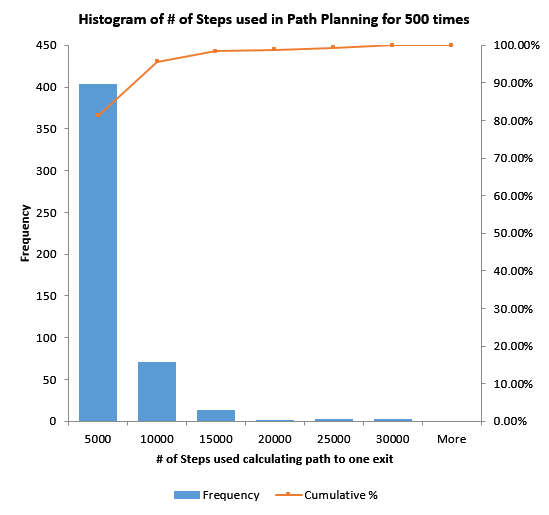

Software Engingeering
Preface:
IMHO, engineering is more about 'how' and 'what'. This does not mean questions like 'why this data structure', 'what are the cons and pros of this' does not matter. To the contrary, they are important as well. My opinion can be wrong but literally that is what I pay attention/adhere to. Problem solving skills are the KEY.
Indoor Nav Project
➤ why the database was ONLY in 1NF? and what was the schema?
A: There are reasons why people need 1NF, 2NF, 3NF or even BCNF. Like minimize duplicates, simplify queries. But my usage is pretty simple and I do not even need primary key (no indexing required as well). My table (relational database) has 38238 rows and 3 columns. The schema is 'Point Name' (varchar(6)), 'AP Name'(char(17)), Strength(tinyint). For the 'Strength' part, data type was float(24) (not 53) and our localization algorithm shows that there is barely an accuracy difference between int/float input, so I switched to tinyint. And I decide we do not need NoSQL characteristic such as partition or schema-free.
➤Did you use proxy? Any load balance? distibuted server?
A: No. Our app connected to server directly and we only had one server, I did not participate in server/network part much in our team.However, in terms of load balance, I thought of two strategies, the 'simplest' round-robin one and the 'lease connection' one.
➤ How extactly is the concurrency problem and how you solve it?
A: It was that when user moves to a new location, the route does not update accordingly. The other one was originally, our app did not keep being connected to server and sent connect request too often, thus after few seconpg the firewall mechanism blocked our requests.
➤ Any trade-off for the computation time reduction? and in detail, how?
A: I applied three tricks. First, exits that are located in dangerous areas before requesting the actual optimal path. Second one is to examine the exit that has the shortest straight line distance to the user’s location regardless obstacles and restricted areas. This optimization is based on the observation that in most cases, such an exit is still the actual closest exit after considering obstacles and restricted areas. Last one, and the most important one, I set up a relatively low threshold of max steps and dynamically decreasing it during the calculation of a shortest path. Upon over 1000 random test cases on the original algorithm, 90% the shortest steps is within 1000 steps.

I also dynamically changed the max steps in next iteration to be 3×actual_used_steps in the current iteration if it is smaller than max steps. This is based on the assumption that a path with smaller cost usually takes less steps to find.
 ➤ What UML model? and design pattern in your project?
A: Functional and object model.
➤ What UML model? and design pattern in your project?
A: Functional and object model.
Simplfication and QA Project
➤1. Why did you rewrite the retrieval part? Add more functionlity? Performance improvement? A: This is designed for people with CD, and we do not know if we have connection to internet or not and we want to get local results only (previous knowledge). The main reason I mentioned this is that I want to demonstrate the experience in Linux/bash, grep, awk and so forth. ➤2. Why after LDA model, the results was improved? A: LDA can find out topic worpg. And once we filter questions without topic worpg (a.k.a bad questions), our angsring system is able to more question correctly, thereby improves the results.
Sentiment Analysis Project
➤ 1. More details about RX, example? A: I did not use grep/egrap, but Python3 instead. Example pseudo code
import re
for line in open("xxx.html"):
entity_pattern = re.compile(r'entitypattern')
nextuser_pattern = re.compiler(r'separatorpattern')
entity_match = entity_pattern.search(line)
nextuser_match = nextuser_pattern.search(line)
if entity_match:
entity_pattern_detail = re.search( r'start(.*)end', line, re.M|re.I)
if entity_pattern_detail:
entity = entity_pattern_detail.group(1)
if nextuser_match:
res = entity
print(res)
KDD Cup Project
➤ 1. How did you filter data? what rule did you apply and any trade-off? And why you want to perform filtering? A: The dataset is large, over 1M steps. The main reason is we want to get better performance during training and testing. And based on observation, we know there are a lot of outlayers or, sparse ones. We can't simply use normally distribution. Filtering data may affect our model, but we have no idea how it could be and we did do comparison. There is hardly a trade-off. More details please check data science part. ➤2. How did you maintain version control? How do you understand the scm/version control? Is it important and why? A: Our team had four numbers and till building website phase, only two person were contridutors. The others had to make pull requests and sometimes we merged and sometimes we created a new branch/fork.